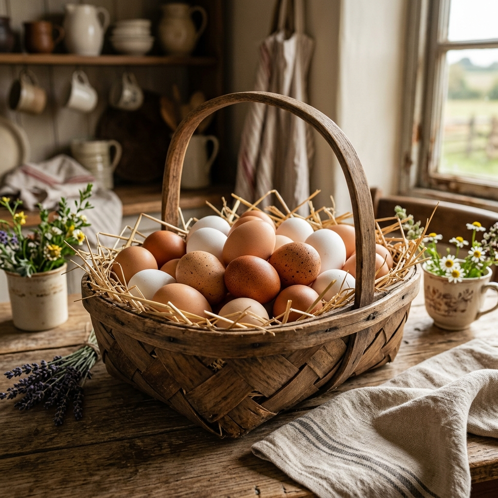
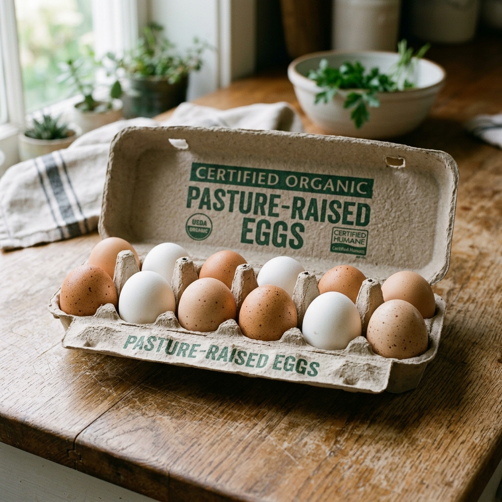

Uncompromising Freshness in Every Shell
We believe that agricultural quality is measured in hours, not weeks. Read about our rigorous biological safety testing, organic certifications, and farm-to-table delivery guarantees.

The Farm-to-Table Process
How we guarantee that your eggs and poultry cuts arrive fresher than supermarket alternatives.
Laying & Natural Foraging
Our hens spend their mornings scratching rotated organic pasture lands for clover, seeds, and insects, enriching egg yolk nutrient densities.
Daily Morning Collection
At 8:00 AM daily, our keepers gently collect eggs by hand. This minimizes coop stress and allows us to verify flock health directly.
Eco-Wash & Quality Grade
Eggs are cleaned using warm, sanitized rainwater processed in our solar-powered washing plant. Every egg is scanned for hairline shell cracks.
Biodegradable Packing
Eggs are placed in 100% recycled paper pulp cartons, preventing condensation and preserving natural shell protective layers. Meats are vacuum sealed.
Refrigerated Direct Delivery
Orders are loaded into our local fleet trucks and delivered directly to households and commercial kitchens within 24 hours of collection.
Certifications & Standards
Our farming and packing facilities are independently certified to guarantee food safety and flock welfare.

USDA Organic
Certified organic fields, feeds, and processes. No chemical pesticides or GMO grain exposure.

Certified Humane
Guarantees full cage-free pasture liberty. Adheres to strict flock stocking density rules.

USDA Grade A
Tested for excellent thick whites, clean shells, and perfect egg shapes. Consistently superior yolks.

Eco-Packaging
Our packing cartons are compostable, unbleached, and crafted from 100% post-consumer materials.
Product Handling Guidelines
Because our eggs are washed according to modern safety standards, they require simple cold-chain storage to preserve their biological integrity.
-
✔
Refrigeration: Keep eggs refrigerated at 36°F to 40°F (2°C to 4°C). Store them in the main body of the fridge rather than door racks to prevent temperature fluctuations.
-
✔
Meat Handling: Keep fresh raw poultry stored in its vacuum packaging on the lowest shelf of your refrigerator. Cook within 3 days or freeze immediately.
-
✔
Do Not Wash Eggs: We have already washed and sanitized each egg. Washing them again at home will remove the carton's dry micro-flora barrier and invite mold.

Check Delivery Coverage
We deliver directly to local residences, caterers, and food establishments. Enter your Zip Code to check if you are within our 24-hour delivery range.